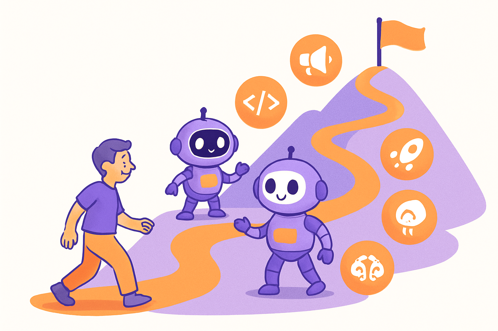
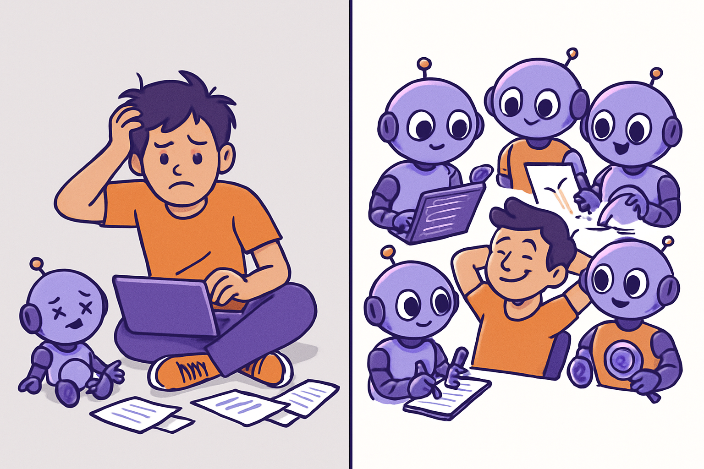
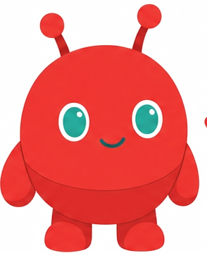
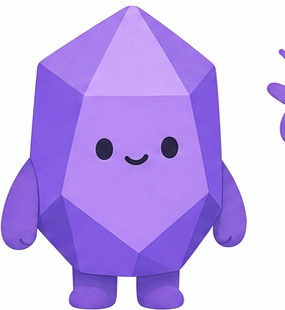
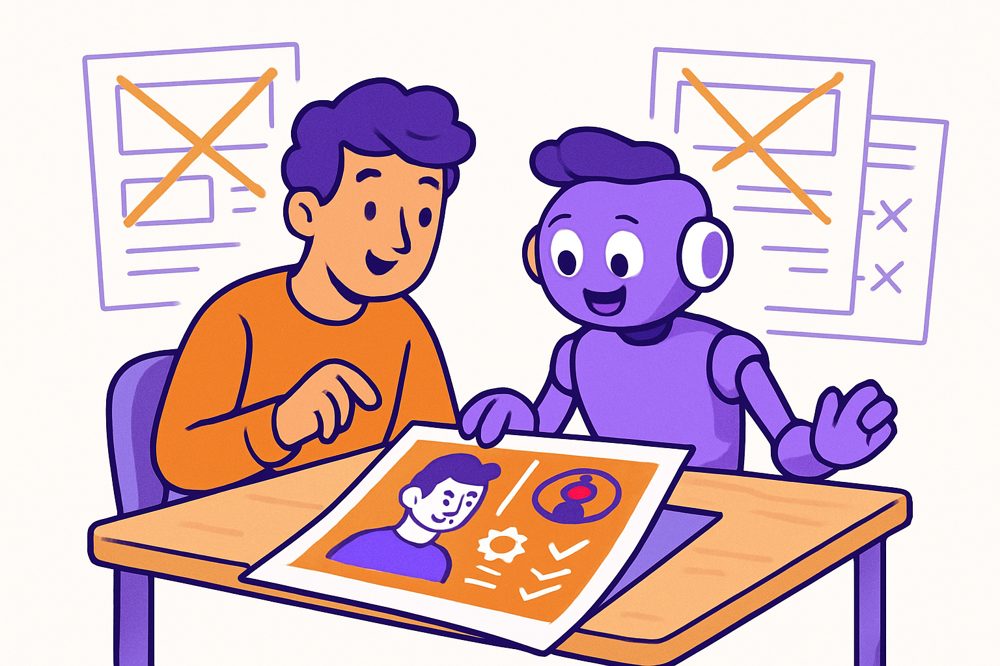
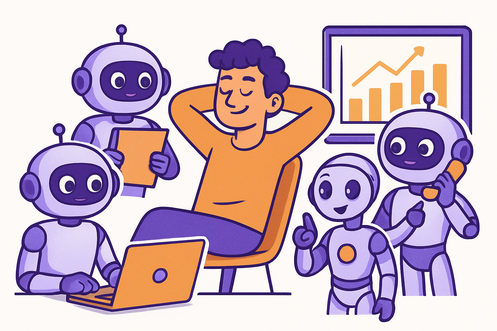
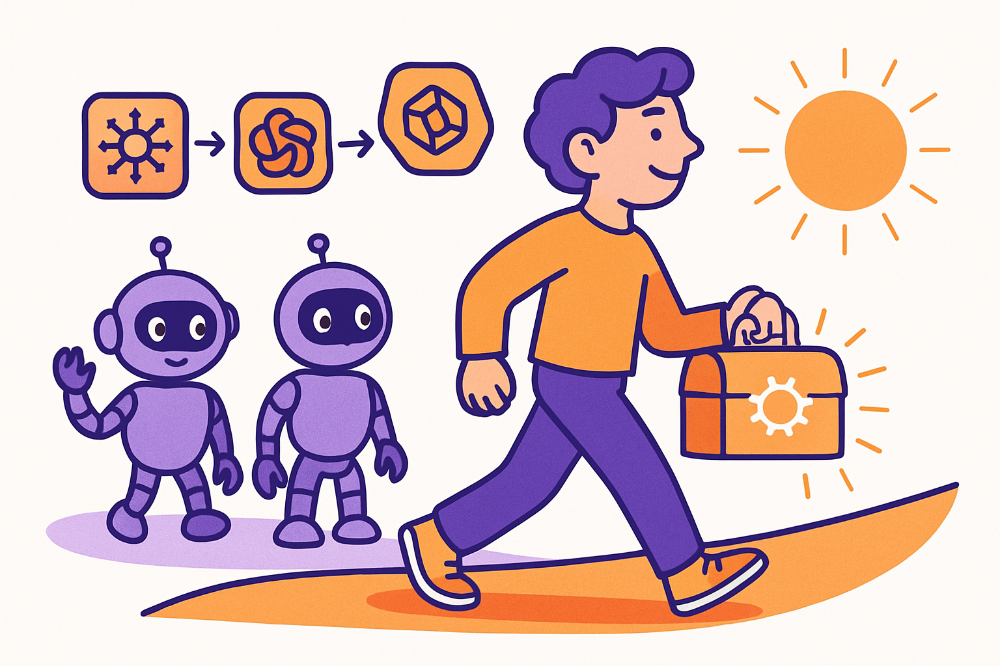

BUSINESS 06
「AIに聞いて終わり」を卒業する。ローカルにメモリを貯める重要性から始め、誰でもAI従業員を構築・活用できるようになる実践型ワークショップです。
— Build your own AI workforce.


ChatGPTに毎回同じ説明をしていませんか？ AIは賢くても「あなたのこと」を知りません。自分の強み、判断基準、業務の文脈をローカルのファイルに蓄積し、AIに渡すことで、初めてAIは「あなた専用の従業員」として機能します。
PLaiのワークショップでは、この「メモリ構築」から始めます。Obsidianで知識を体系化し、Claude Codeに渡すコンテキストファイルを設計。8週間で、誰でも自分専用のAI従業員チームを構築できる状態を目指します。

一般的なAIスクールは「ツールの使い方」を教えます。PLaiのワークショップは「AIに自分の仕事を任せる仕組み」を教えます。
受講者の事業内容に合わせた個別カスタマイズ、実際のプロジェクトでの実装、そして講師自身がAI従業員で事業を回しているからこそ伝えられる実践知。「動画を見て終わり」のスクールとは一線を画す、手を動かして身につけるプログラムです。
CURRICULUM
なぜローカルにメモリを貯めることが重要なのかを理解するところから始めます。Obsidianで自分の強み・判断基準・業務知識を構造化し、AIに渡せる「第二の脳」を構築。クラウドに依存しない、自分だけの知識基盤を作ります。
宿題：自分の事業・強み・判断基準を1つのMarkdownファイルにまとめる
Claude Codeのインストールと初回実行。「チャットで指示→AIがコードを書く→動くものができる」という体験を通じて開発のイメージを掴みます。GitHubでのバージョン管理、Vercelへのデプロイ、GitHub Actionsでの定期実行を実装。
宿題：AIに指示して簡単なLPを作り、Vercelにデプロイする
学んだ技術を実際の集客に接続。X投稿の自動生成、note記事のアウトライン作成、メルマガ下書き、LP制作をAIに任せる方法を実践。「X → セミナー → サービス申込」の集客ファネルを設計します。
宿題：AIに1本のX投稿案またはLP設計を作らせる
Claude Codeの複数インスタンス運用で、営業・リサーチ・経理・マーケティングそれぞれに特化したAI従業員を設計。情報の一元管理、マルチエージェント協調、承認フロー設計を実装。卒業後も自走できる体制を整備します。
宿題：8週間の成果をスライドまたはMarkdownでプレゼン発表
ENTRY POINTS
まずは5日間の無料メール講座で考え方に触れてください。Day 1でローカルメモリの基本を理解し、Day 5で実際にAIに指示して何かを作る体験ができます。無料講座を受けた後、8週間の有料ワークショップに進むかどうかを決められます。

OpenClaw 教育
Obsidian 知識管理 Claude Code
開発・実装
Claude Code
開発・実装
WHY PLai

01
汎用的なカリキュラムではなく、受講者一人ひとりの事業内容・課題に合わせた個別設計。飲食店、コンサル、EC、教育。どんな業種でも「自分の仕事をAIに任せる」具体的な方法を一緒に考えます。

02
PLaiは実際にAI従業員で事業を回している会社です。8アカウント46,000+フォロワーのSNS運用、HP制作、動画編集、すべてAIが担当。「教科書の知識」ではなく「現場で使っている方法」を直接伝えます。

03
8週間で身につけるのは特定のツールの使い方ではなく、「AIに自分の仕事を任せる思考法」。ツールが変わっても、AIモデルが進化しても、この考え方は使い続けられます。Discordコミュニティでの卒業後サポートも充実。